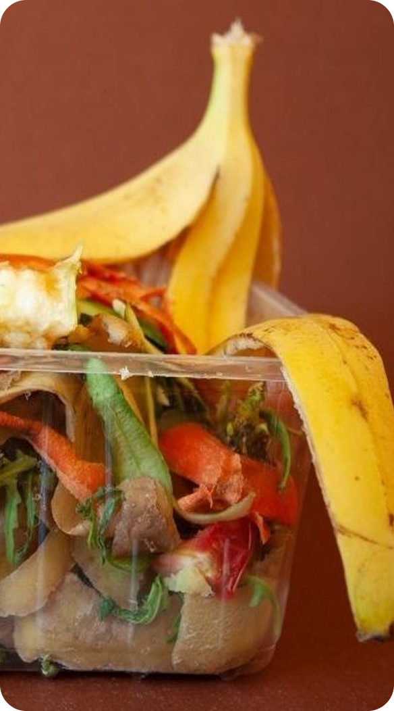

1,3 bilhões
Toneladas de alimentos desperdiçadas globalmente por ano.
30%
Da produção brasileira de alimentos vai para o lixo.
10%
Das emissões globais de CO₂ vêm do desperdício alimentar.

O Impacto do Desperdício de
Alimentos
Entenda como o desperdício afeta o meio ambiente e a sociedade
No Brasil, cerca de 30% dos alimentos produzidos são desperdiçados. Isso representa milhões de toneladas de comida que poderiam alimentar pessoas em situação de insegurança alimentar. Além disso, o desperdício contribui para emissões de gases de efeito estufa e uso desnecessário de recursos naturais.
Dados importantes:
- 1,3 bilhão de toneladas de alimentos são desperdiçadas globalmente por ano.
- Cerca de 30% dos alimentos produzidos no Brasil são desperdiçados.
- O desperdício também gera impactos ambientais.